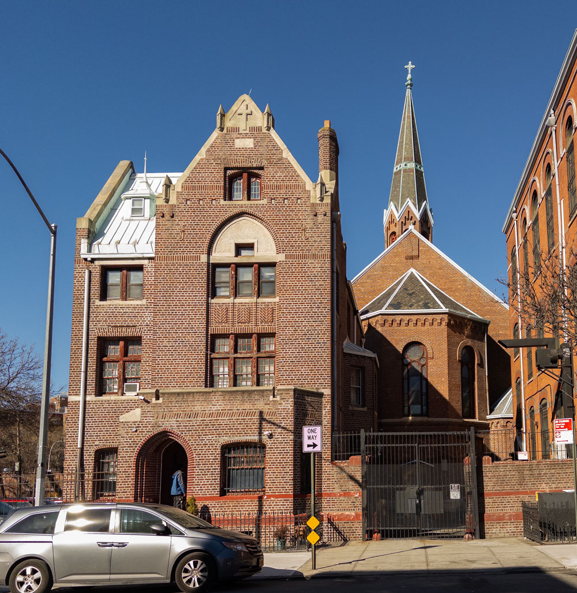
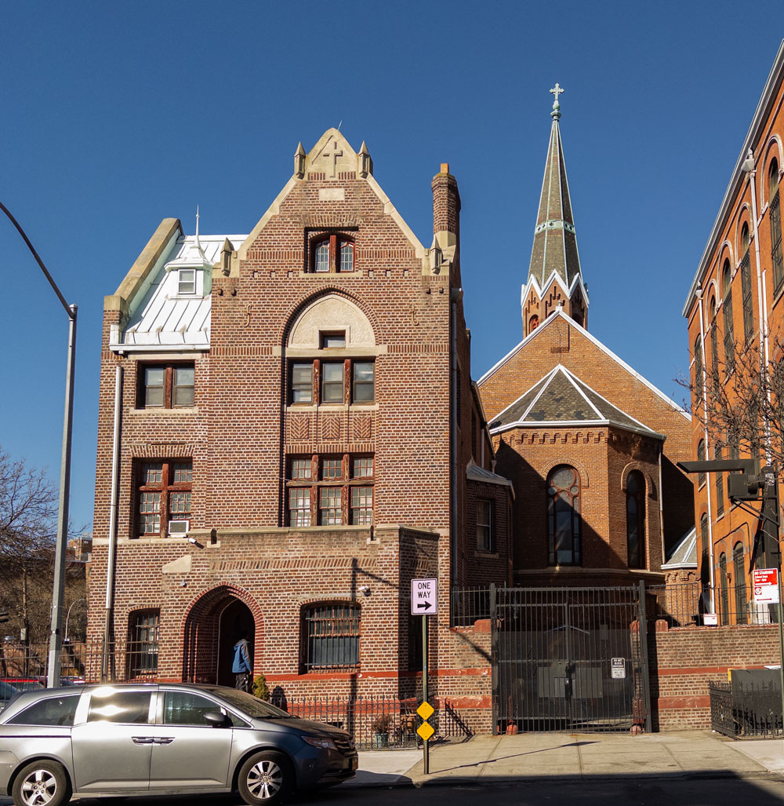
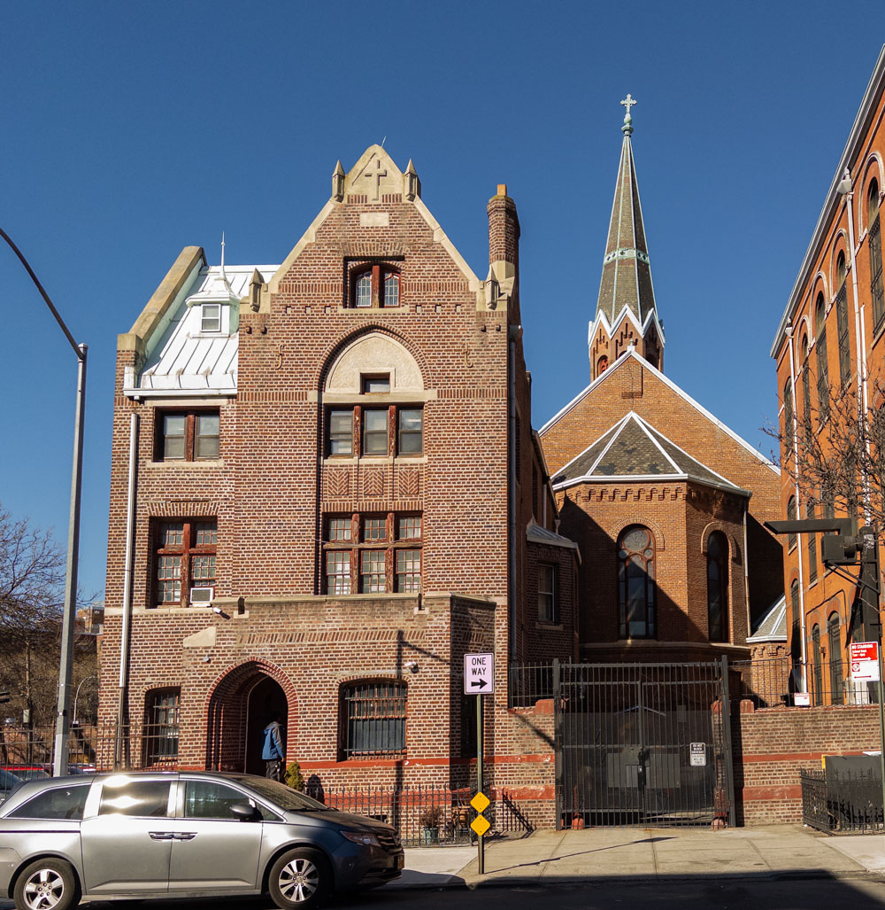

Photo Gallery

 


Walking through my neighborhood, one of the patterns I notice is the vast amount of churches within just a few blocks...
Many of these churches were established during times of migration, especially in the 1980s and 1990s, when Crown Heights had a large Caribbean immigrant population...
These churches aren’t just places of worship; they are support systems. They provide food pantries, community events, and a space for immigrants to connect.
